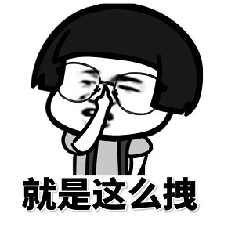
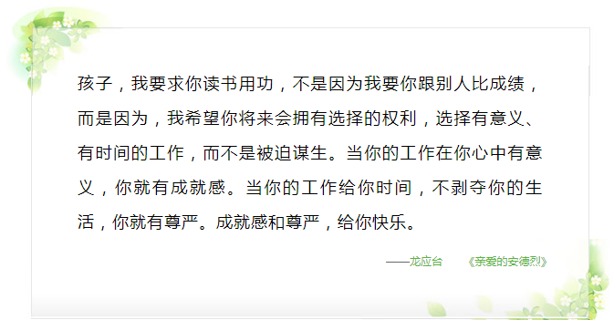
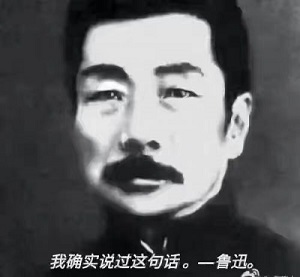
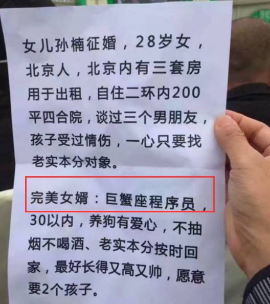
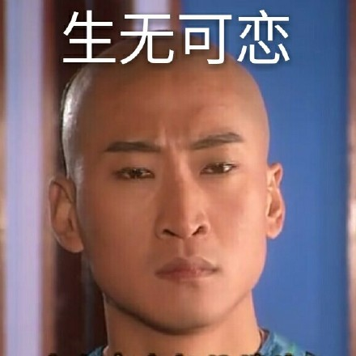

我见过很多人没有梦想，他们虽然羡慕那些有梦想的人，但是依然在自己所处的环境下过的很快乐；
// 我的梦想就是不上班
我也见过很多人明明知道自己的喜爱，却不敢去追求，或者因为种种原因不得不放弃，早早的就失去了年轻人的朝气。
我也见过很多人很早就找到了自己的内心的追求，在青春的路上，虽然坎坷却不畏困难。

曾经我是第一种人，陶渊明弃官隐居，“采菊东篱下，悠然见南山”，王冕淡泊名利，“不要人夸好颜色，只留清气满乾坤”，诸葛亮三分天下，也曾写下“非淡泊无以明志,非宁静无以致远”。我觉得像我老爹一样，在村里喂几头牛，平平淡淡、无拘无束的挺好的。
高考就这样结束了，学校生涯也就这么草草的终结了。
//主要是觉得学历无用，考的太少只是个借口。
后来的某一天，我不知道在哪个旮旯里看到了这个：
我对上边的话是这么理解的：‘你的努力与积累，是为了让你未来可以不受现实所羁绊，选择任何你喜欢的职业，甚至当你厌倦的一份工作的时候，还可以随时的转行，不受约束。毕竟，自由是需要代价的’。
再后来，我又在网上看到了这么一句话：“最怕你一生碌碌无为，还说平凡难能可贵”。
我开始重新审视我自己，若刘备三顾茅庐找的是我，我该跟人家说什么？德玛西亚？好像不合适…… 茴香豆的茴字怎样写的？好像也不合适…… 怎么治理国家？我以前没有看新闻联播啊……
就这样，不知不觉，离开学校已经三年了；就这样，我不知不觉的变成了第二种人。ps：路人甲：不对啊，第二种人不是应该有梦想的么？你的梦想难道就是等刘备？我：错！为了费雷尔卓德！！！
再后来，再后来，再后来，就到了今年的年初。那时候的我其实也被很多东西羁绊着，本想着等到今年的年底再找个学校学习电脑的，不过听说黑马报名优惠500块现大洋，我就过来了。。。。。。咳咳，主要是鲁迅说，早来黑马能认识萌妹子……
 以下为正文我曾经的老板，985毕业，本来在一家公司当的高管，可是偏偏要自己创业。这样让他需要承担特别大的风险，工作强度是普通的工人的两倍以上，每天只能睡几个小时，还不着家，他媳妇没少跟他吵架，听说后来每次只要他媳妇发火，他就自觉跪搓衣板，特别的乖巧，一点脾气都没有。老板在公司还夸他媳妇，她一个人在家不容易，是自己没有做到丈夫的责任。尽管最后创业还是失败了。
如今，我对于他对了几分理解。而现在的我应该是比他幸福的，至少我不用跪搓衣板。更主要的是，我未来也不用跪搓衣板。毕竟程序员可是居家暖男。( •̀ ω •́ )✧
最开始的时候，我以为“别跟我谈理想，戒了”是个笑话，那时候，我感觉所谓的鸡汤很有道理，后来也许是听得久了，也许是失败的多了，我发现我才是那个笑话。而现在，终于我也要成为写鸡汤的人了。呵，时间啊，这才三年呐~
以上正文结束来到黑马，我觉得这次选择是对的。//
<虽然我并不黑，也不是马>
来到黑马前端学习，当初当我做出的第一个页面的时候，可把我激动坏了，那句“hello world”，拥抱的可是全世界啊!!
后来终于完成第一个京东项目的时候，我特别想把自己写的页面放到网上，为此，在网上查资料到凌晨三点，最后还是没找到方法，给我失望的，那天睡觉并不开心。
直到前几天学了git，我终于明白当初为何失败了，因为那时候宿舍网络不稳定，卡了。。。。。。我觉得你们应该能够明白我的感受
再说一个很有意思的事，前几天考试，某个改卷子的晚自习，老师说很多人都没有写最后一题的简答题，班里一片哀号，“最后还有简答题？”，当时特别激动，因为我写了！！！哈哈哈，当时拉着我同桌的手，激动的说，“我不是倒数第一了，哈哈哈”，我同桌特别捧我，露出了这个表情
哦，对了，最后成绩出来了，我的确不是倒数第一，是第二…………，正数第二。哇哈哈哈哈
本来想在这放一张美女班主任的照片的，想想也许把她的QQ头像贴出来更有意思

最后：
每到六月，我们经常告诉高三的学弟学妹：如今的高考不一定是鱼跃龙门方法，但是绝对是一个不拼爹的公平的平台。同样我与新入坑的程序员共勉一句话，编程也是一个公平不拼爹的平台，“hello world”拥抱的真的是整个世界。